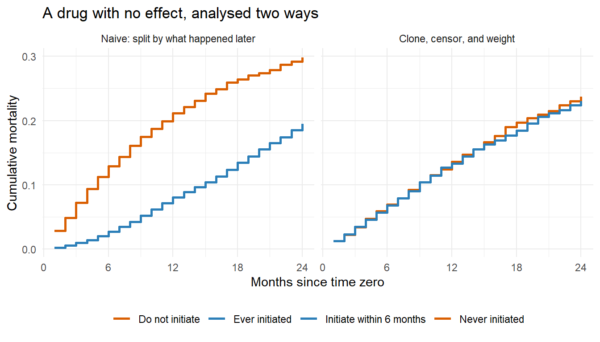
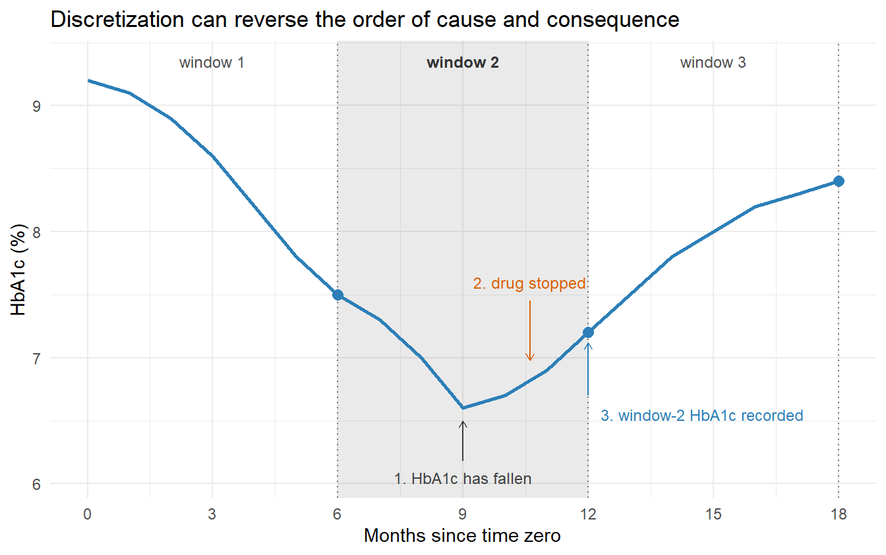

New users, active comparators, grace periods, and a time grid that respects causal order
Estimated reading time: 45 minutes
A randomized trial hands you time zero. Someone consents, someone randomizes, the clock starts, and every subsequent event is unambiguously after baseline. A national registry hands you twenty years of prescriptions, laboratory values, and hospital contacts for five million people, and no clock at all. You have to build one, and the way you build it decides how much of your estimate is drug effect and how much is bookkeeping.
Chapter 6 fixed the question. This chapter is about the three design choices that determine whether the data can answer it: who enters the study and when, how long a patient has to start treatment before they count as a non-starter, and how continuous records get mapped onto the discrete time grid that longitudinal estimators need.
Learning objectives
Explain why prevalent users bias a comparison and what the new-user design fixes
Choose an active comparator and say what estimand a matched control group actually delivers
Set washout and lookback windows, and handle patients who become eligible more than once
Build a grace period into the protocol and estimate it with clone-censor-weight
Map continuous registry records onto a time grid without reversing causal order
7.1 New users, and why prevalent users lie
The simplest way to assemble a cohort is to take everyone on the drug on 1 January and follow them. That cohort excludes, silently, everyone who started the drug and stopped because it made them ill, everyone who started and died, and everyone who started and switched. What remains is a group selected for having tolerated the drug, and comparing them to non-users makes the drug look safe because it is the survivors of the drug who are in the cohort (Ray 2003).
Two mechanisms are at work and they are worth separating. Selective survival means that the follow-up starts after the risky period has already passed. Depletion of susceptibles means that the people most likely to have an adverse reaction have already had it and left, so the remaining hazard is lower than the hazard a new patient faces. Both push in the same direction, and neither is fixed by adjusting for baseline covariates, because the selection happened before baseline.
The new-user design starts the clock at initiation, so every patient contributes their own early, high-risk period. That requires a washout: a period before time zero in which the patient had no prescriptions for the drug, long enough that a first prescription really is a first. Twelve months is a common default in claims data and it is a default, not a finding. A drug taken in long cycles with planned breaks needs a longer washout or the study will label a restart as an initiation.
Washout length is a positivity decision, not a cleanliness decision
Lengthening the washout from 12 to 36 months makes “new user” a stronger claim, and it also requires 36 months of prior database enrolment. Patients who moved, changed insurer, or entered the registry recently are dropped. That is selection on database tenure, which correlates with age, region, and socioeconomic status. Report the cohort size after each criterion and check whether the excluded group differs from the retained one.
7.2 The comparator problem
Non-users are almost never the right comparison group, because the people not taking a drug are not taking it for reasons that predict the outcome. Confounding by indication is the usual name, and no adjustment set fully removes it when the indication is a clinical judgment that the data never recorded.
The active-comparator design compares initiators of drug A with initiators of drug B for the same indication (Lund, Richardson, and Stürmer 2015). Both groups have consulted a clinician, both have had the condition judged severe enough to treat, and both have crossed the same prescribing threshold. The remaining confounding is about the choice between two drugs rather than the choice to treat at all, which is a much smaller gap.
Registry data have a structural problem here that trial data do not. The registry records the day a patient starts a statin. It does not record the day a patient became eligible for a statin and did not start one. There is no line in the database that says “on 3 March this patient met the guideline threshold and the clinician chose to wait.” So the untreated comparison group has no natural time zero, and the analyst has to invent one, usually by matching each initiator to a patient who was eligible on the same calendar day and had not initiated.
That construction works, and it changes the estimand. The comparison group is defined by an unobserved mechanism, namely whatever made some eligible patients start and others not, and the resulting contrast is closer to an effect among the treated than an effect in the whole eligible population. Write that into the estimand table rather than discovering it in peer review.
Time zero for combination therapy
Patients rarely begin two drugs on the same day. For a study of the combination, time zero is the first day the patient is on both, which is the later of the two start dates. Defining it this way also solves a second problem: it gives each patient exactly one eligible moment, so nobody enters the cohort twice.
7.3 Eligible more than once
A patient can meet the eligibility criteria repeatedly. Consider a protocol requiring no prescriptions in the previous five years, and a patient prescribed the drug at ages 36, 46, and 56. All three moments qualify.
Three ways out, each with a cost:
Take every eligible moment. This maximizes sample size and violates the trial emulation, because no real trial enrolls the same person three times. Rows from the same patient are correlated, and the patient’s later entries are conditioned on having survived their earlier ones.
Take the first. Clean, and it distorts the covariate distribution in a way that is easy to miss. A criterion of age over 50 will assign age 50 to most of the cohort, because the first moment a patient satisfies an age threshold is the moment they cross it. If the treated arm has no such pile-up, the arms are not comparable on age even after adjustment.
Sample one at random. Restores a single time zero per patient and keeps the covariate distribution closer to the eligible population. It costs precision and it needs to be prespecified, including the random seed.
The sequential trial emulation used by Danaei et al. (2013) takes a fourth route: run a separate trial at each eligible month, each with its own time zero, and pool the results with a robust variance that accounts for patients appearing in several trials. It is more work and it wastes less data.
7.4 Grace periods and immortal time
Protocols say things like “initiate within 30 days of diagnosis” because real clinical practice has lag. A patient diagnosed on Monday and started on treatment three weeks later has followed the protocol. A design that requires initiation on day zero would exclude most of the cohort.
The moment a protocol allows a window, an analytic trap opens. If a patient is classified as treated because they initiated on day 21, then days 0 through 20 are time during which they were not yet treated but are counted in the treated arm. More to the point, they had to survive those 21 days to be classified as treated at all. Anyone who died on day 10 is classified as untreated. That is immortal time bias (Suissa 2008), and it manufactures a survival advantage for the treated arm out of nothing.
Chapter 5 shows the same bias arising from the statin literature. Here the concern is what to do about it when the protocol genuinely needs a grace period.
The answer is clone-censor-weight (Miguel A. Hernán et al. 2016; Cain et al. 2010; Maringe et al. 2020). At time zero, every patient is compatible with every arm, because nobody has done anything yet. So put every patient in every arm. Then censor each copy at the moment its data stop being consistent with that arm’s protocol: the copy in the “initiate within the grace period” arm is censored at the end of the grace period if the patient has not initiated, and the copy in the “do not initiate” arm is censored on the day the patient initiates. Censoring is informative, because the patients who initiate differ from those who do not, so weight the remaining follow-up by the inverse probability of not yet having been censored.
A patient who dies on day 10 without initiating dies in both arms. That is the point. Their death counts against the treated arm as well as the untreated one, because on day 10 they were still following both protocols.
7.4.1 Immortal time, and its repair, in one simulation
The simulation below has no treatment effect at all. Monthly mortality depends on a baseline severity score and nothing else. Initiation is more likely among sicker patients, so confounding by indication should make treatment look harmful. Whatever protective effect appears is an artefact.
Ever-initiators look 10 percentage points better off than never-initiators, for a drug with no effect, in a cohort where the sicker patients are the ones who start. The immortal time swamps the confounding.
Now the repair. Build a person-month panel, model the monthly initiation hazard, and construct the two arms.
Show code
last <-ifelse(is.na(death_month), K, death_month)id <-rep(seq_len(n), last)mo <-sequence(last)panel <-data.frame( id, month = mo, W = W[id],died =as.integer(mo == last[id] &!is.na(death_month[id])),init =as.integer(!is.na(init_month[id]) & mo == init_month[id]),on =as.integer(!is.na(init_month[id]) & mo >= init_month[id]))# Monthly initiation hazard, fit on the months a patient began still untreatedat_risk <- panel[panel$on ==0| panel$init ==1, ]init_mod <-glm(init ~ W + month, family = binomial, data = at_risk)at_risk$p <-predict(init_mod, type ="response")# Probability of remaining untreated through each monthat_risk$untreated_through <-ave(1- at_risk$p, at_risk$id, FUN = cumprod)
Show code
# P(initiate by the end of the grace period | W), per patientg <- at_risk[at_risk$month <= grace, ]p_by_grace <-tapply(g$untreated_through, g$id, function(v) 1- v[length(v)])p_by_grace <- p_by_grace[as.character(seq_len(n))]init_by_grace <-!is.na(init_month) & init_month <= grace# Arm 1: "initiate within 6 months". Copies that have not initiated are# censored at month 6; the survivors of that censoring carry the weight.arm1 <- panel[panel$month <= grace | init_by_grace[panel$id], ]arm1$wt <-ifelse(arm1$month <= grace, 1, 1/ p_by_grace[arm1$id])# Arm 0: "do not initiate". Each copy is censored the month it initiates.stop0 <-ifelse(is.na(init_month), last, pmin(last, init_month -1L))arm0 <- panel[panel$month <= stop0[panel$id], ]w_map <-setNames(1/ at_risk$untreated_through, paste(at_risk$id, at_risk$month))arm0$wt <- w_map[paste(arm0$id, arm0$month)]risk24 <-function(a) { num <-tapply(a$wt * a$died, a$month, sum) den <-tapply(a$wt, a$month, sum)1-prod(1-as.numeric(num / den))}ccw <-c(`arm 1 (initiate)`=risk24(arm1), `arm 0 (do not)`=risk24(arm0))round(c(ccw, `risk difference`=unname(diff(rev(ccw)))), 4)#> arm 1 (initiate) arm 0 (do not) risk difference #> 0.2305 0.2372 -0.0067
Show code
library(ggplot2)cum_risk <-function(d, wt =NULL) {if (is.null(wt)) wt <-rep(1, nrow(d)) h <-tapply(wt * d$died, d$month, sum) /tapply(wt, d$month, sum)1-cumprod(1-as.numeric(h))}naive_panel <- panelnaive_panel$grp <-ifelse(ever[naive_panel$id], "Ever initiated", "Never initiated")curves <-rbind(data.frame(month =1:K, risk =cum_risk(naive_panel[naive_panel$grp =="Ever initiated", ]),arm ="Ever initiated", panel ="Naive: split by what happened later"),data.frame(month =1:K, risk =cum_risk(naive_panel[naive_panel$grp =="Never initiated", ]),arm ="Never initiated", panel ="Naive: split by what happened later"),data.frame(month =1:K, risk =cum_risk(arm1, arm1$wt),arm ="Initiate within 6 months", panel ="Clone, censor, and weight"),data.frame(month =1:K, risk =cum_risk(arm0, arm0$wt),arm ="Do not initiate", panel ="Clone, censor, and weight"))curves$panel <-factor(curves$panel,levels =c("Naive: split by what happened later", "Clone, censor, and weight"))ggplot(curves, aes(month, risk, colour = arm)) +geom_step(linewidth =0.9) +facet_wrap(~panel) +scale_x_continuous(breaks =seq(0, 24, 6)) +scale_colour_manual(values =c("Ever initiated"="#2c7fb8", "Never initiated"="#d95f02","Initiate within 6 months"="#2c7fb8", "Do not initiate"="#d95f02")) +labs(x ="Months since time zero", y ="Cumulative mortality", colour =NULL,title ="A drug with no effect, analysed two ways") +theme_minimal() +theme(legend.position ="bottom")

Figure 7.1: Cumulative mortality under a drug with no effect. The left panel splits patients by whether they ever initiated, the classification that creates immortal time: the ever-initiated curve is pulled down because reaching initiation requires surviving to it. The right panel clones every patient into both arms, censors each copy when it deviates from its protocol, and weights for that censoring. The two arms then coincide, which is the truth.
The clone-censor-weight estimate lands within a fraction of a percentage point of zero, which is the truth. Two practical warnings come with it. The weights grow through follow-up in the “do not initiate” arm, because remaining untreated for two years is rare among sick patients, and by month 24 the largest weight exceeds 146. That is a positivity signal, and Chapter 13 has the diagnostics for reading it. Second, the artificial censoring is only ignorable given the variables in the initiation model. Here the model is correct by construction; in a registry it is a Super Learner fit on everything recorded before the decision, and it is the weakest link in the analysis.
7.5 Mapping continuous records onto a time grid
Longitudinal estimators want ordered nodes: covariates, then treatment, then outcome, repeating. Registry data arrive as timestamps. Turning one into the other is where a surprising amount of bias enters, and it is rarely reported.
The goal is to lose time resolution without losing causal order. Losing resolution is a fair trade: a monthly grid cannot see a treatment change on day 12 versus day 19. Losing order is not a trade, because it puts a consequence of treatment in the position of a confounder.
Suppose a patient’s HbA1c falls sharply while on a glucose-lowering drug, and the clinician responds by stopping the drug. In continuous time the sequence is unambiguous: the fall came first, the discontinuation second. Now discretize into six-month windows, defining treatment status across the whole window and HbA1c by the measurement taken at the window’s end. The discretized record holds one treatment value for window two and one HbA1c value for window two, and the analysis reads that covariate as the state of the patient before the decision. It was recorded two months after it.
Show code
tr <-data.frame(month =0:18)tr$hba1c <-c(9.2, 9.1, 8.9, 8.6, 8.2, 7.8, 7.5, 7.3, 7.0, 6.6,6.7, 6.9, 7.2, 7.5, 7.8, 8.0, 8.2, 8.3, 8.4)ggplot(tr, aes(month, hba1c)) +annotate("rect", xmin =6, xmax =12, ymin =-Inf, ymax =Inf,alpha =0.10, fill ="grey20") +geom_vline(xintercept =c(6, 12, 18), linetype ="dotted", colour ="grey45") +geom_line(linewidth =1, colour ="#2c7fb8") +geom_point(data = tr[tr$month %in%c(6, 12, 18), ], size =2.6, colour ="#2c7fb8") +annotate("segment", x =9, xend =9, y =6.18, yend =6.5,arrow =arrow(length =unit(0.16, "cm")), colour ="grey25") +annotate("text", x =9, y =6.05, label ="1. HbA1c has fallen",colour ="grey25", size =3.1) +annotate("segment", x =10.6, xend =10.6, y =7.45, yend =6.98,arrow =arrow(length =unit(0.16, "cm")), colour ="#d95f02") +annotate("text", x =10.6, y =7.6, label ="2. drug stopped",colour ="#d95f02", size =3.1) +annotate("segment", x =12, xend =12, y =6.7, yend =7.12,arrow =arrow(length =unit(0.16, "cm")), colour ="#2c7fb8") +annotate("text", x =12.3, y =6.55, hjust =0, size =3.1, colour ="#2c7fb8",label ="3. window-2 HbA1c recorded") +annotate("text", x =3, y =9.35, label ="window 1", size =3.1, colour ="grey30") +annotate("text", x =9, y =9.35, label ="window 2", size =3.1, colour ="grey20",fontface ="bold") +annotate("text", x =15, y =9.35, label ="window 3", size =3.1, colour ="grey30") +scale_x_continuous(breaks =seq(0, 18, 3)) +labs(x ="Months since time zero", y ="HbA1c (%)",title ="Discretization can reverse the order of cause and consequence") +theme_minimal()

Figure 7.2: One patient’s HbA1c trajectory across three six-month windows. Real time runs left to right: HbA1c falls through month 9, the clinician stops the drug in month 10 in response, and the next laboratory value is recorded at month 12 with the rebound already under way. Discretized into windows, the record holds one treatment value for window 2 and one HbA1c value for window 2, so an analysis that adjusts the window-2 treatment for the window-2 covariate conditions on a measurement taken after the decision. Lagging the covariate by one window removes the overlap.
The fix is to lag: take the covariate for a window from the measurement available at its start, so the covariate window and the treatment window do not overlap. This costs information, because the most recent reading is the most informative one, and it buys an ordering the analysis can defend. When the covariate is genuinely measured before the treatment decision within a window, the lag is unnecessary, but that has to be established from the timestamps rather than assumed.
Discretized variables come in three kinds, and keeping them straight is most of the battle:
Table 7.1: Three ways a continuous record becomes a node in a discrete-time analysis
Kind
Derived from
Examples
Status at the start of the interval
The record as it stood at the boundary
On treatment or not, comorbidity history, censoring status
Summary within the interval
Everything timestamped inside the window
Mean blood glucose, number of contacts, cumulative dose
Status at the end of the interval
The record as it stood at the closing boundary
Event occurrence, laboratory value at the visit
Variables of the same kind, inside the same interval, have no ordering in the discretized data even though they had one in real time. If two concurrent variables are adjusted for each other and the true order runs the other way, the analysis conditions on a consequence of the very thing it is trying to estimate. The bias runs toward the null and it is invisible in any diagnostic that only looks at the wide dataset.
Two practical recommendations follow, both from analysts who have had to do this on national registers.
Choose the grid from pharmacology, not convenience. If a drug takes six months to give protection and its protection persists roughly six months after stopping, six-month windows are defensible and monthly windows add noise without adding signal. If treatment status and the outcome rarely change within a month, monthly windows lose almost nothing.
Keep the data long and build wide datasets on demand. A single wide dataset forces one ordering on every nuisance model. Keeping the records in long, timestamped form and extracting a causally ordered wide dataset for each nuisance regression separately lets each model see exactly the history available before the variable it is predicting. It is more code and it prevents the class of error above.
7.6 The design table
The estimand table of Chapter 6 says what to estimate. A design table says what had to be true of the data for the estimate to mean that. Fill both in before the outcome is unmasked, as Chapter 21 recommends.
Table 7.2: A design table for the running case study
Design element
Decision
Consequence to state
Eligibility
Adults with the indication, no prior prescription in 12 months
Excludes patients with under 12 months of enrolment
Time zero
First prescription date; for combinations, the later of the two
One entry per patient
Repeat eligibility
Sequential trials at each eligible month, pooled
Robust variance; patients recur across trials
Comparator
Initiators of the active comparator
Confounding is between two drugs, not treated versus untreated
Grace period
Initiation within 6 months of eligibility
Clone-censor-weight, initiation model prespecified
Time grid
6-month windows, covariates lagged one window
Cannot resolve changes within a window
Follow-up ends
24 months, death, or emigration
Administrative censoring assumed independent given covariates
7.7 Check your understanding
Q1. A reviewer objects that cloning each patient into both arms “double counts” the data and will understate the standard errors. Are they right?
They are right about the variance and wrong about the bias. The point estimate is not double counted in any meaningful sense: each clone contributes follow-up only while it remains compatible with its arm’s protocol, and the weights correct for the selection that censoring induces. The variance is a real problem, because the clones from one patient are the same person and their contributions are correlated. Use a robust sandwich variance clustered on patient, or a nonparametric bootstrap that resamples patients rather than clones. Reporting a naive model-based standard error would indeed be too narrow.
Q2. Your protocol requires no prior use in the previous 12 months. A colleague suggests extending it to 60 months to be safe. What do you check before agreeing?
How many patients survive the criterion, and who they are. A 60-month washout requires 60 months of continuous database enrolment before time zero, which drops recent entrants, people who changed insurer or region, and in many systems younger and more mobile patients. Compare the covariate distribution before and after the restriction. If the retained cohort is older and sicker, the estimand has quietly changed population, and the longer washout has bought a cleaner definition of “new user” at the cost of the population the study claims to describe. Check also whether the drug is used in cycles long enough that 12 months would misclassify a restart, which is the substantive reason to extend.
Q3. In the discretization example, why does putting the window-2 HbA1c and window-2 treatment status in the wrong order bias the estimate toward the null rather than away from it?
Treating a consequence of treatment as though it were a confounder means adjusting for part of the causal pathway. The drug lowers HbA1c, HbA1c predicts the outcome, and conditioning on it blocks that route from treatment to outcome. What remains is the effect not mediated by the adjusted variable, which is smaller than the total effect and is reported as though it were the total. This is the same mechanism as the treatment-confounder feedback problem of Chapter 14, arriving through the time grid rather than through the choice of adjustment set.
7.8 Sources and further reading
Ray (2003) makes the case for new-user designs and names the prevalent-user biases.
Lund, Richardson, and Stürmer (2015) covers the active-comparator new-user design and its historical development.
Suissa (2008) is the standard account of immortal time bias in pharmacoepidemiology.
Miguel A. Hernán et al. (2016) shows how writing the target trial protocol prevents immortal time bias by construction; Miguel A. Hernán and Robins (2016) is the companion on emulation.
Cain et al. (2010) introduces the grace-period regime and its estimation; Maringe et al. (2020) is a worked clone-censor-weight analysis with code-level detail.
Danaei et al. (2013) demonstrates sequential trial emulation across repeated eligibility.
Miguel A. Hernán et al. (2008) re-analyses the hormone therapy question as an emulated trial and recovers the trial result.
Rubin (2007) argues for separating design from analysis, which is the principle behind masking the outcome while these decisions are made.
Wang et al. (2023) develops targeted estimation for longitudinal registry data with time-varying nodes, the setting the time-grid discussion assumes.
Martinussen (2022) explains what the Cox model with time-dependent covariates does and does not estimate.
7.9 What comes next
Design decides which comparisons the data can support. Chapter 8 begins the estimators that turn a supported comparison into a number, and Chapter 13 supplies the diagnostics for deciding whether the support is real.
Cain, Lauren E., James M. Robins, Emilie Lanoy, Roger Logan, Dominique Costagliola, and Miguel A. Hernán. 2010. “When to Start Treatment? A Systematic Approach to the Comparison of Dynamic Regimes Using Observational Data.”The International Journal of Biostatistics 6 (2): Article 18.
Danaei, Goodarz, Luis A. García Rodríguez, Oscar Fernandez Cantero, Roger Logan, and Miguel A. Hernán. 2013. “Observational Data for Comparative Effectiveness Research: An Emulation of Randomised Clinical Trials of Statins.”Statistical Methods in Medical Research 22 (1): 70–96.
Hernán, Miguel A., Alvaro Alonso, Roger Logan, Francine Grodstein, Karin B. Michels, Walter C. Willett, JoAnn E. Manson, and James M. Robins. 2008. “Observational Studies Analyzed Like Randomized Experiments: An Application to Postmenopausal Hormone Therapy and Coronary Heart Disease.”Epidemiology 19 (6): 766–79.
Hernán, Miguel A, and James M Robins. 2016. “Using Big Data to Emulate a Target Trial When a Randomized Trial Is Not Available.”American Journal of Epidemiology 183 (8): 758–64.
Hernán, Miguel A., Brian C. Sauer, Sonia Hernández-Díaz, Robert Platt, and Ian Shrier. 2016. “Specifying a Target Trial Prevents Immortal Time Bias and Other Self-Inflicted Injuries in Observational Analyses.”Journal of Clinical Epidemiology 79: 70–75.
Lund, Jennifer L., David B. Richardson, and Til Stürmer. 2015. “The Active Comparator, New User Study Design in Pharmacoepidemiology: Historical Foundations and Contemporary Application.”Current Epidemiology Reports 2 (4): 221–28.
Maringe, Camille, Sara Benitez Majano, Aimilia Exarchakou, Matthew Smith, Bernard Rachet, Aurélien Belot, and Clémence Leyrat. 2020. “Reflection on Modern Methods: Trial Emulation in the Presence of Immortal-Time Bias. Assessing the Benefit of Major Surgery for Elderly Lung Cancer Patients Using Observational Data.”International Journal of Epidemiology 49 (5): 1719–29.
Martinussen, Torben. 2022. “Causality and the Cox Regression Model.”Annual Review of Statistics and Its Application 9: 249–59.
Ray, Wayne A. 2003. “Evaluating Medication Effects Outside of Clinical Trials: New-User Designs.”American Journal of Epidemiology 158 (9): 915–20.
Rubin, Donald B. 2007. “The Design Versus the Analysis of Observational Studies for Causal Effects: Parallels with the Design of Randomized Trials.”Statistics in Medicine 26 (1): 20–36. https://doi.org/10.1002/sim.2739.
Suissa, Samy. 2008. “Immortal Time Bias in Pharmacoepidemiology.”American Journal of Epidemiology 167 (4): 492–99.
Wang, Zeyi, Lars van der Laan, Maya Petersen, Thomas Gerds, Kajsa Kvist, and Mark van der Laan. 2023. “Targeted Maximum Likelihood Based Estimation for Longitudinal Mediation Analysis.”arXiv Preprint arXiv:2304.04904.
Source Code
---subtitle: "New users, active comparators, grace periods, and a time grid that respects causal order"format: html---# Design and Time Zero in Registry Data {#sec-design-time-zero}*Estimated reading time: 45 minutes*```{r}#| include: falseknitr::opts_chunk$set(collapse =TRUE,comment ="#>",fig.width =7,fig.height =4,fig.align ="center")```A randomized trial hands you time zero. Someone consents, someone randomizes, the clock starts, and every subsequent event is unambiguously after baseline. A national registry hands you twenty years of prescriptions, laboratory values, and hospital contacts for five million people, and no clock at all. You have to build one, and the way you build it decides how much of your estimate is drug effect and how much is bookkeeping.@sec-estimand fixed the question. This chapter is about the three design choices that determine whether the data can answer it: who enters the study and when, how long a patient has to start treatment before they count as a non-starter, and how continuous records get mapped onto the discrete time grid that longitudinal estimators need.::: {.callout-note}## Learning objectives- Explain why prevalent users bias a comparison and what the new-user design fixes- Choose an active comparator and say what estimand a matched control group actually delivers- Set washout and lookback windows, and handle patients who become eligible more than once- Build a grace period into the protocol and estimate it with clone-censor-weight- Map continuous registry records onto a time grid without reversing causal order:::## New users, and why prevalent users lieThe simplest way to assemble a cohort is to take everyone on the drug on 1 January and follow them. That cohort excludes, silently, everyone who started the drug and stopped because it made them ill, everyone who started and died, and everyone who started and switched. What remains is a group selected for having tolerated the drug, and comparing them to non-users makes the drug look safe because it is the survivors of the drug who are in the cohort [@ray2003newuser].Two mechanisms are at work and they are worth separating. Selective survival means that the follow-up starts after the risky period has already passed. Depletion of susceptibles means that the people most likely to have an adverse reaction have already had it and left, so the remaining hazard is lower than the hazard a new patient faces. Both push in the same direction, and neither is fixed by adjusting for baseline covariates, because the selection happened before baseline.The new-user design starts the clock at initiation, so every patient contributes their own early, high-risk period. That requires a washout: a period before time zero in which the patient had no prescriptions for the drug, long enough that a first prescription really is a first. Twelve months is a common default in claims data and it is a default, not a finding. A drug taken in long cycles with planned breaks needs a longer washout or the study will label a restart as an initiation.::: {.callout-important}## Washout length is a positivity decision, not a cleanliness decisionLengthening the washout from 12 to 36 months makes "new user" a stronger claim, and it also requires 36 months of prior database enrolment. Patients who moved, changed insurer, or entered the registry recently are dropped. That is selection on database tenure, which correlates with age, region, and socioeconomic status. Report the cohort size after each criterion and check whether the excluded group differs from the retained one.:::## The comparator problemNon-users are almost never the right comparison group, because the people not taking a drug are not taking it for reasons that predict the outcome. Confounding by indication is the usual name, and no adjustment set fully removes it when the indication is a clinical judgment that the data never recorded.The active-comparator design compares initiators of drug A with initiators of drug B for the same indication [@lund2015active]. Both groups have consulted a clinician, both have had the condition judged severe enough to treat, and both have crossed the same prescribing threshold. The remaining confounding is about the choice between two drugs rather than the choice to treat at all, which is a much smaller gap.Registry data have a structural problem here that trial data do not. The registry records the day a patient starts a statin. It does not record the day a patient became eligible for a statin and did not start one. There is no line in the database that says "on 3 March this patient met the guideline threshold and the clinician chose to wait." So the untreated comparison group has no natural time zero, and the analyst has to invent one, usually by matching each initiator to a patient who was eligible on the same calendar day and had not initiated.That construction works, and it changes the estimand. The comparison group is defined by an unobserved mechanism, namely whatever made some eligible patients start and others not, and the resulting contrast is closer to an effect among the treated than an effect in the whole eligible population. Write that into the estimand table rather than discovering it in peer review.::: {.callout-tip}## Time zero for combination therapyPatients rarely begin two drugs on the same day. For a study of the combination, time zero is the first day the patient is on both, which is the later of the two start dates. Defining it this way also solves a second problem: it gives each patient exactly one eligible moment, so nobody enters the cohort twice.:::## Eligible more than onceA patient can meet the eligibility criteria repeatedly. Consider a protocol requiring no prescriptions in the previous five years, and a patient prescribed the drug at ages 36, 46, and 56. All three moments qualify.Three ways out, each with a cost:**Take every eligible moment.** This maximizes sample size and violates the trial emulation, because no real trial enrolls the same person three times. Rows from the same patient are correlated, and the patient's later entries are conditioned on having survived their earlier ones.**Take the first.** Clean, and it distorts the covariate distribution in a way that is easy to miss. A criterion of age over 50 will assign age 50 to most of the cohort, because the first moment a patient satisfies an age threshold is the moment they cross it. If the treated arm has no such pile-up, the arms are not comparable on age even after adjustment.**Sample one at random.** Restores a single time zero per patient and keeps the covariate distribution closer to the eligible population. It costs precision and it needs to be prespecified, including the random seed.The sequential trial emulation used by @danaei2013statins takes a fourth route: run a separate trial at each eligible month, each with its own time zero, and pool the results with a robust variance that accounts for patients appearing in several trials. It is more work and it wastes less data.## Grace periods and immortal timeProtocols say things like "initiate within 30 days of diagnosis" because real clinical practice has lag. A patient diagnosed on Monday and started on treatment three weeks later has followed the protocol. A design that requires initiation on day zero would exclude most of the cohort.The moment a protocol allows a window, an analytic trap opens. If a patient is classified as treated because they initiated on day 21, then days 0 through 20 are time during which they were not yet treated but are counted in the treated arm. More to the point, they had to survive those 21 days to be classified as treated at all. Anyone who died on day 10 is classified as untreated. That is immortal time bias [@suissa2008immortal], and it manufactures a survival advantage for the treated arm out of nothing.@sec-roadmap shows the same bias arising from the statin literature. Here the concern is what to do about it when the protocol genuinely needs a grace period.The answer is clone-censor-weight [@hernan2016specifying; @cain2010when; @maringe2020trial]. At time zero, every patient is compatible with every arm, because nobody has done anything yet. So put every patient in every arm. Then censor each copy at the moment its data stop being consistent with that arm's protocol: the copy in the "initiate within the grace period" arm is censored at the end of the grace period if the patient has not initiated, and the copy in the "do not initiate" arm is censored on the day the patient initiates. Censoring is informative, because the patients who initiate differ from those who do not, so weight the remaining follow-up by the inverse probability of not yet having been censored.A patient who dies on day 10 without initiating dies in both arms. That is the point. Their death counts against the treated arm as well as the untreated one, because on day 10 they were still following both protocols.### Immortal time, and its repair, in one simulationThe simulation below has no treatment effect at all. Monthly mortality depends on a baseline severity score and nothing else. Initiation is more likely among sicker patients, so confounding by indication should make treatment look harmful. Whatever protective effect appears is an artefact.```{r}#| label: ccw-simulate#| interactive: trueset.seed(7)n <-8000; K <-24; grace <-6W <-rnorm(n) # baseline severity (higher = sicker)h_death <-function(w) plogis(-4.6+0.60* w) # NO treatment term anywhereh_init <-function(w) plogis(-3.0+0.75* w) # sicker patients start soonerdeath_month <-rep(NA_integer_, n); init_month <-rep(NA_integer_, n)alive <-rep(TRUE, n); started <-rep(FALSE, n)for (t in1:K) { starts <- alive &!started & (runif(n) <h_init(W)) init_month[starts] <- t; started[starts] <-TRUE dies <- alive & (runif(n) <h_death(W)) death_month[dies] <- t; alive[dies] <-FALSE}ever <-!is.na(init_month); died24 <-!is.na(death_month)naive_rd <-mean(died24[ever]) -mean(died24[!ever])c(`ever initiated`=mean(ever), `24-month mortality`=mean(died24),`naive risk difference`=round(naive_rd, 4))```Ever-initiators look `r sprintf("%.0f", abs(naive_rd) * 100)` percentage points better off than never-initiators, for a drug with no effect, in a cohort where the sicker patients are the ones who start. The immortal time swamps the confounding.Now the repair. Build a person-month panel, model the monthly initiation hazard, and construct the two arms.```{r}#| label: ccw-panellast <-ifelse(is.na(death_month), K, death_month)id <-rep(seq_len(n), last)mo <-sequence(last)panel <-data.frame( id, month = mo, W = W[id],died =as.integer(mo == last[id] &!is.na(death_month[id])),init =as.integer(!is.na(init_month[id]) & mo == init_month[id]),on =as.integer(!is.na(init_month[id]) & mo >= init_month[id]))# Monthly initiation hazard, fit on the months a patient began still untreatedat_risk <- panel[panel$on ==0| panel$init ==1, ]init_mod <-glm(init ~ W + month, family = binomial, data = at_risk)at_risk$p <-predict(init_mod, type ="response")# Probability of remaining untreated through each monthat_risk$untreated_through <-ave(1- at_risk$p, at_risk$id, FUN = cumprod)``````{r}#| label: ccw-arms# P(initiate by the end of the grace period | W), per patientg <- at_risk[at_risk$month <= grace, ]p_by_grace <-tapply(g$untreated_through, g$id, function(v) 1- v[length(v)])p_by_grace <- p_by_grace[as.character(seq_len(n))]init_by_grace <-!is.na(init_month) & init_month <= grace# Arm 1: "initiate within 6 months". Copies that have not initiated are# censored at month 6; the survivors of that censoring carry the weight.arm1 <- panel[panel$month <= grace | init_by_grace[panel$id], ]arm1$wt <-ifelse(arm1$month <= grace, 1, 1/ p_by_grace[arm1$id])# Arm 0: "do not initiate". Each copy is censored the month it initiates.stop0 <-ifelse(is.na(init_month), last, pmin(last, init_month -1L))arm0 <- panel[panel$month <= stop0[panel$id], ]w_map <-setNames(1/ at_risk$untreated_through, paste(at_risk$id, at_risk$month))arm0$wt <- w_map[paste(arm0$id, arm0$month)]risk24 <-function(a) { num <-tapply(a$wt * a$died, a$month, sum) den <-tapply(a$wt, a$month, sum)1-prod(1-as.numeric(num / den))}ccw <-c(`arm 1 (initiate)`=risk24(arm1), `arm 0 (do not)`=risk24(arm0))round(c(ccw, `risk difference`=unname(diff(rev(ccw)))), 4)``````{r}#| label: fig-ccw-comparison#| fig-cap: "Cumulative mortality under a drug with no effect. The left panel splits patients by whether they ever initiated, the classification that creates immortal time: the ever-initiated curve is pulled down because reaching initiation requires surviving to it. The right panel clones every patient into both arms, censors each copy when it deviates from its protocol, and weights for that censoring. The two arms then coincide, which is the truth."#| code-fold: true#| fig-height: 4library(ggplot2)cum_risk <-function(d, wt =NULL) {if (is.null(wt)) wt <-rep(1, nrow(d)) h <-tapply(wt * d$died, d$month, sum) /tapply(wt, d$month, sum)1-cumprod(1-as.numeric(h))}naive_panel <- panelnaive_panel$grp <-ifelse(ever[naive_panel$id], "Ever initiated", "Never initiated")curves <-rbind(data.frame(month =1:K, risk =cum_risk(naive_panel[naive_panel$grp =="Ever initiated", ]),arm ="Ever initiated", panel ="Naive: split by what happened later"),data.frame(month =1:K, risk =cum_risk(naive_panel[naive_panel$grp =="Never initiated", ]),arm ="Never initiated", panel ="Naive: split by what happened later"),data.frame(month =1:K, risk =cum_risk(arm1, arm1$wt),arm ="Initiate within 6 months", panel ="Clone, censor, and weight"),data.frame(month =1:K, risk =cum_risk(arm0, arm0$wt),arm ="Do not initiate", panel ="Clone, censor, and weight"))curves$panel <-factor(curves$panel,levels =c("Naive: split by what happened later", "Clone, censor, and weight"))ggplot(curves, aes(month, risk, colour = arm)) +geom_step(linewidth =0.9) +facet_wrap(~panel) +scale_x_continuous(breaks =seq(0, 24, 6)) +scale_colour_manual(values =c("Ever initiated"="#2c7fb8", "Never initiated"="#d95f02","Initiate within 6 months"="#2c7fb8", "Do not initiate"="#d95f02")) +labs(x ="Months since time zero", y ="Cumulative mortality", colour =NULL,title ="A drug with no effect, analysed two ways") +theme_minimal() +theme(legend.position ="bottom")```The clone-censor-weight estimate lands within a fraction of a percentage point of zero, which is the truth. Two practical warnings come with it. The weights grow through follow-up in the "do not initiate" arm, because remaining untreated for two years is rare among sick patients, and by month 24 the largest weight exceeds `r sprintf("%.0f", max(arm0$wt))`. That is a positivity signal, and @sec-positivity-overlap has the diagnostics for reading it. Second, the artificial censoring is only ignorable given the variables in the initiation model. Here the model is correct by construction; in a registry it is a Super Learner fit on everything recorded before the decision, and it is the weakest link in the analysis.## Mapping continuous records onto a time gridLongitudinal estimators want ordered nodes: covariates, then treatment, then outcome, repeating. Registry data arrive as timestamps. Turning one into the other is where a surprising amount of bias enters, and it is rarely reported.The goal is to lose time resolution without losing causal order. Losing resolution is a fair trade: a monthly grid cannot see a treatment change on day 12 versus day 19. Losing order is not a trade, because it puts a consequence of treatment in the position of a confounder.Suppose a patient's HbA1c falls sharply while on a glucose-lowering drug, and the clinician responds by stopping the drug. In continuous time the sequence is unambiguous: the fall came first, the discontinuation second. Now discretize into six-month windows, defining treatment status across the whole window and HbA1c by the measurement taken at the window's end. The discretized record holds one treatment value for window two and one HbA1c value for window two, and the analysis reads that covariate as the state of the patient before the decision. It was recorded two months after it.```{r}#| label: fig-discretization#| fig-cap: "One patient's HbA1c trajectory across three six-month windows. Real time runs left to right: HbA1c falls through month 9, the clinician stops the drug in month 10 in response, and the next laboratory value is recorded at month 12 with the rebound already under way. Discretized into windows, the record holds one treatment value for window 2 and one HbA1c value for window 2, so an analysis that adjusts the window-2 treatment for the window-2 covariate conditions on a measurement taken after the decision. Lagging the covariate by one window removes the overlap."#| code-fold: true#| fig-height: 4.4tr <-data.frame(month =0:18)tr$hba1c <-c(9.2, 9.1, 8.9, 8.6, 8.2, 7.8, 7.5, 7.3, 7.0, 6.6,6.7, 6.9, 7.2, 7.5, 7.8, 8.0, 8.2, 8.3, 8.4)ggplot(tr, aes(month, hba1c)) +annotate("rect", xmin =6, xmax =12, ymin =-Inf, ymax =Inf,alpha =0.10, fill ="grey20") +geom_vline(xintercept =c(6, 12, 18), linetype ="dotted", colour ="grey45") +geom_line(linewidth =1, colour ="#2c7fb8") +geom_point(data = tr[tr$month %in%c(6, 12, 18), ], size =2.6, colour ="#2c7fb8") +annotate("segment", x =9, xend =9, y =6.18, yend =6.5,arrow =arrow(length =unit(0.16, "cm")), colour ="grey25") +annotate("text", x =9, y =6.05, label ="1. HbA1c has fallen",colour ="grey25", size =3.1) +annotate("segment", x =10.6, xend =10.6, y =7.45, yend =6.98,arrow =arrow(length =unit(0.16, "cm")), colour ="#d95f02") +annotate("text", x =10.6, y =7.6, label ="2. drug stopped",colour ="#d95f02", size =3.1) +annotate("segment", x =12, xend =12, y =6.7, yend =7.12,arrow =arrow(length =unit(0.16, "cm")), colour ="#2c7fb8") +annotate("text", x =12.3, y =6.55, hjust =0, size =3.1, colour ="#2c7fb8",label ="3. window-2 HbA1c recorded") +annotate("text", x =3, y =9.35, label ="window 1", size =3.1, colour ="grey30") +annotate("text", x =9, y =9.35, label ="window 2", size =3.1, colour ="grey20",fontface ="bold") +annotate("text", x =15, y =9.35, label ="window 3", size =3.1, colour ="grey30") +scale_x_continuous(breaks =seq(0, 18, 3)) +labs(x ="Months since time zero", y ="HbA1c (%)",title ="Discretization can reverse the order of cause and consequence") +theme_minimal()```The fix is to lag: take the covariate for a window from the measurement available at its *start*, so the covariate window and the treatment window do not overlap. This costs information, because the most recent reading is the most informative one, and it buys an ordering the analysis can defend. When the covariate is genuinely measured before the treatment decision within a window, the lag is unnecessary, but that has to be established from the timestamps rather than assumed.Discretized variables come in three kinds, and keeping them straight is most of the battle:| Kind | Derived from | Examples ||---|---|---|| **Status at the start of the interval** | The record as it stood at the boundary | On treatment or not, comorbidity history, censoring status || **Summary within the interval** | Everything timestamped inside the window | Mean blood glucose, number of contacts, cumulative dose || **Status at the end of the interval** | The record as it stood at the closing boundary | Event occurrence, laboratory value at the visit |: Three ways a continuous record becomes a node in a discrete-time analysis {#tbl-discretization-kinds}Variables of the same kind, inside the same interval, have no ordering in the discretized data even though they had one in real time. If two concurrent variables are adjusted for each other and the true order runs the other way, the analysis conditions on a consequence of the very thing it is trying to estimate. The bias runs toward the null and it is invisible in any diagnostic that only looks at the wide dataset.Two practical recommendations follow, both from analysts who have had to do this on national registers.**Choose the grid from pharmacology, not convenience.** If a drug takes six months to give protection and its protection persists roughly six months after stopping, six-month windows are defensible and monthly windows add noise without adding signal. If treatment status and the outcome rarely change within a month, monthly windows lose almost nothing.**Keep the data long and build wide datasets on demand.** A single wide dataset forces one ordering on every nuisance model. Keeping the records in long, timestamped form and extracting a causally ordered wide dataset for each nuisance regression separately lets each model see exactly the history available before the variable it is predicting. It is more code and it prevents the class of error above.## The design tableThe estimand table of @sec-estimand says what to estimate. A design table says what had to be true of the data for the estimate to mean that. Fill both in before the outcome is unmasked, as @sec-clean-room recommends.| Design element | Decision | Consequence to state ||---|---|---|| Eligibility | Adults with the indication, no prior prescription in 12 months | Excludes patients with under 12 months of enrolment || Time zero | First prescription date; for combinations, the later of the two | One entry per patient || Repeat eligibility | Sequential trials at each eligible month, pooled | Robust variance; patients recur across trials || Comparator | Initiators of the active comparator | Confounding is between two drugs, not treated versus untreated || Grace period | Initiation within 6 months of eligibility | Clone-censor-weight, initiation model prespecified || Time grid | 6-month windows, covariates lagged one window | Cannot resolve changes within a window || Follow-up ends | 24 months, death, or emigration | Administrative censoring assumed independent given covariates |: A design table for the running case study {#tbl-design-table}## Check your understanding<details><summary><strong>Q1. A reviewer objects that cloning each patient into both arms "double counts" the data and will understate the standard errors. Are they right?</strong></summary>They are right about the variance and wrong about the bias. The point estimate is not double counted in any meaningful sense: each clone contributes follow-up only while it remains compatible with its arm's protocol, and the weights correct for the selection that censoring induces. The variance is a real problem, because the clones from one patient are the same person and their contributions are correlated. Use a robust sandwich variance clustered on patient, or a nonparametric bootstrap that resamples patients rather than clones. Reporting a naive model-based standard error would indeed be too narrow.</details><details><summary><strong>Q2. Your protocol requires no prior use in the previous 12 months. A colleague suggests extending it to 60 months to be safe. What do you check before agreeing?</strong></summary>How many patients survive the criterion, and who they are. A 60-month washout requires 60 months of continuous database enrolment before time zero, which drops recent entrants, people who changed insurer or region, and in many systems younger and more mobile patients. Compare the covariate distribution before and after the restriction. If the retained cohort is older and sicker, the estimand has quietly changed population, and the longer washout has bought a cleaner definition of "new user" at the cost of the population the study claims to describe. Check also whether the drug is used in cycles long enough that 12 months would misclassify a restart, which is the substantive reason to extend.</details><details><summary><strong>Q3. In the discretization example, why does putting the window-2 HbA1c and window-2 treatment status in the wrong order bias the estimate toward the null rather than away from it?</strong></summary>Treating a consequence of treatment as though it were a confounder means adjusting for part of the causal pathway. The drug lowers HbA1c, HbA1c predicts the outcome, and conditioning on it blocks that route from treatment to outcome. What remains is the effect not mediated by the adjusted variable, which is smaller than the total effect and is reported as though it were the total. This is the same mechanism as the treatment-confounder feedback problem of @sec-longitudinal-confounding, arriving through the time grid rather than through the choice of adjustment set.</details>## Sources and further reading- @ray2003newuser makes the case for new-user designs and names the prevalent-user biases.- @lund2015active covers the active-comparator new-user design and its historical development.- @suissa2008immortal is the standard account of immortal time bias in pharmacoepidemiology.- @hernan2016specifying shows how writing the target trial protocol prevents immortal time bias by construction; @hernan2016target is the companion on emulation.- @cain2010when introduces the grace-period regime and its estimation; @maringe2020trial is a worked clone-censor-weight analysis with code-level detail.- @danaei2013statins demonstrates sequential trial emulation across repeated eligibility.- @hernan2008observational re-analyses the hormone therapy question as an emulated trial and recovers the trial result.- @rubin2007design argues for separating design from analysis, which is the principle behind masking the outcome while these decisions are made.- @wang2023longitudinal develops targeted estimation for longitudinal registry data with time-varying nodes, the setting the time-grid discussion assumes.- @martinussen2022causality explains what the Cox model with time-dependent covariates does and does not estimate.## What comes nextDesign decides which comparisons the data can support. @sec-gcomputation begins the estimators that turn a supported comparison into a number, and @sec-positivity-overlap supplies the diagnostics for deciding whether the support is real.